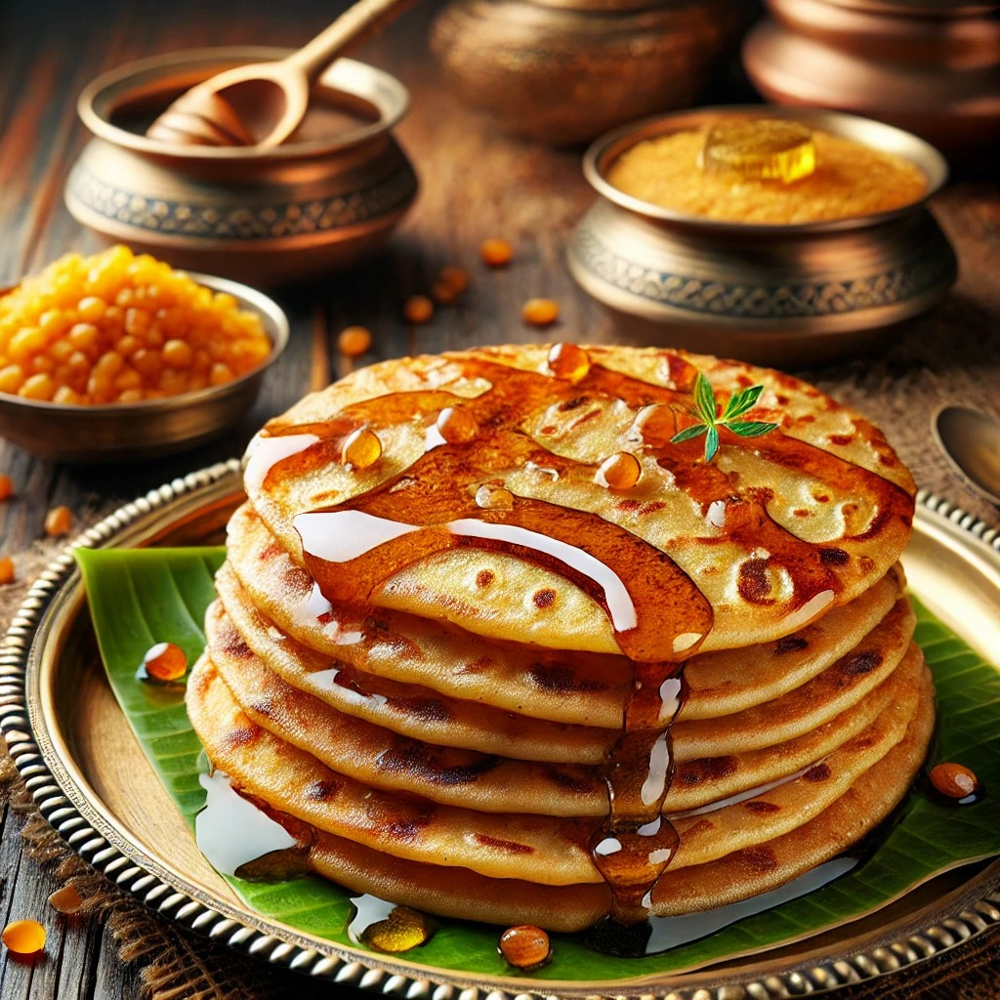

(B)
obbatlu
Back

Bobbatlu
Traditional Sweet Flatbread
Total Calories: 230 calories per piece
Ingredients:
1 cup chana dal (split Bengal gram) - Used for the filling.
1 cup jaggery - Provides natural sweetness.
1 cup all-purpose flour - Used for the outer dough.
½ teaspoon cardamom powder - Adds aroma to the filling.
2 tablespoons ghee - For greasing and cooking.
Water as needed - To knead the dough.
Method:
Step 1 - Preparing the dough
Mix all-purpose flour with water to form a soft dough. Let it rest for 30 minutes.
Step 2 - Making the filling
Boil chana dal until soft, drain excess water, and mash it. Mix with jaggery and cardamom powder, cooking until it forms a thick paste.
Step 3 - Shaping Bobbatlu
Take a small portion of dough, stuff it with the prepared filling, and roll into a flat disc.
Step 4 - Cooking
Heat a tawa (griddle), grease with ghee, and cook each side until golden brown.
Step 5 - Serving
Serve warm with a drizzle of ghee for a delicious festive treat.